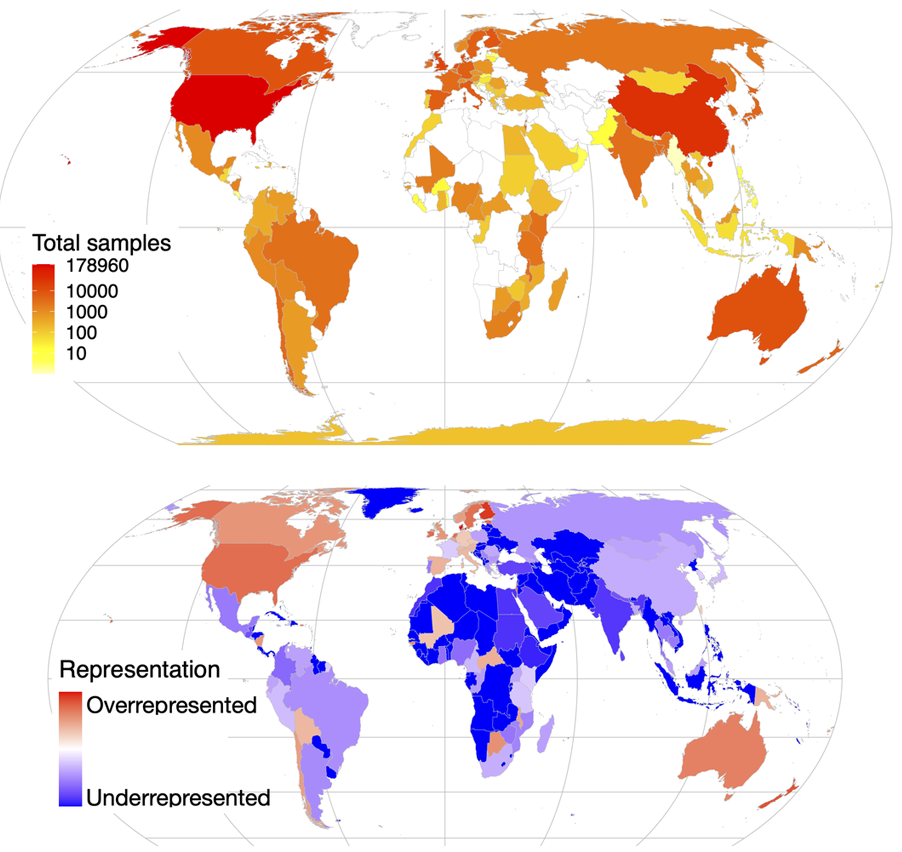
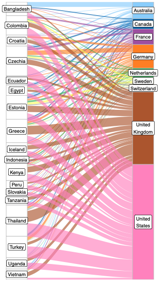
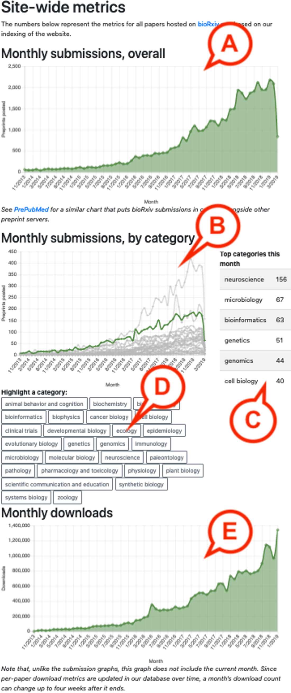
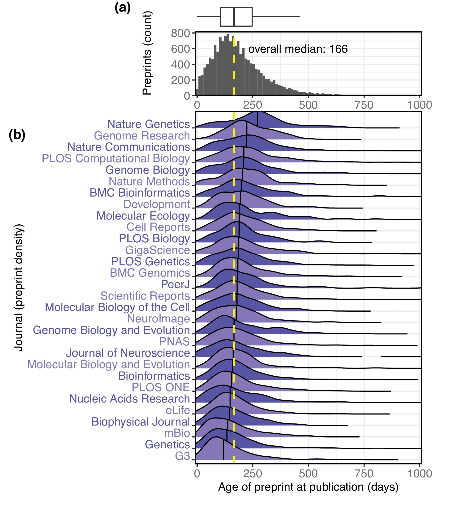

I'm a senior biomedical data manager at Sage Bionetworks, a 501(c)3 nonprofit that works with research groups, universities and funders to coordinate open sharing of biomedical research data.
I previously worked as a computational biologist studying the human microbiome (University of Chicago, University of Minnesota) and the epigenetics of nuclear architecture (University of Pennsylvania). Before that, I was a software developer at the Minnesota Supercomputing Institute and at companies including USA Today, Target and Amazon Web Services.
Research
I love working on "map of every tree" projects: evaluating the ways data is generated and shared to better characterize the things we think we understand. Please see Google Scholar for a complete list of publications.
Integration of 168,000 samples reveals global patterns of the human gut microbiome
Abdill RJ*, Graham SP*, Rubinetti V, Ahmadian M, Hicks P, Chetty A, McDonald D, Ferretti P, Gibbons E, Rossi M, Krishan A, Albert FW, Greene CS, Davis S, Blekhman R.
Cell (2025)

The factors shaping human microbiome variation are a major focus of biomedical research. While other fields have used large sequencing compendia to extract insights requiring otherwise impractical sample sizes, the microbiome field has lacked a comparably sized resource for the 16S rRNA gene amplicon sequencing commonly used to quantify microbiome composition. To address this gap, we processed 168,464 publicly available human gut microbiome samples with a uniform pipeline. We use this compendium to evaluate geographic and technical effects on microbiome variation. We find that regions such as Central and Southern Asia differ significantly from the more thoroughly characterized microbiomes of Europe and Northern America and that composition alone can be used to predict a sample’s region of origin. We also find strong associations between microbiome variation and technical factors such as primers and DNA extraction. We anticipate this growing work, the Human Microbiome Compendium, will enable advanced applied and methodological research.
Public human microbiome data dominated by highly developed countries
Abdill RJ, Adamowicz EM & Blekhman R
PLOS Biology (2022)

The importance of sampling from globally representative populations has been well established in human genomics. In human microbiome research, however, we lack a full understanding of the global distribution of sampling in research studies. This information is crucial to better understand global patterns of microbiome-associated diseases and to extend the health benefits of this research to all populations. Here, we analyze the country of origin of all 444,829 human microbiome samples that have been collected to date and are available from the world’s three largest genomic data repositories, including the Sequence Read Archive (SRA). We show that more than 71% of publicly available human microbiome samples with a known origin come from Europe, the United States, and Canada, including 46.8% from the United States alone, despite the country representing only 4.3% of the global population. We also find that central and southern Asia is the most underrepresented region: Countries such as India, Pakistan, and Bangladesh account for more than a quarter of the world population but make up only 1.8 percent of human microbiome samples. These results demonstrate a critical need to ensure more global representation of participants in microbiome studies.
International authorship and collaboration across bioRxiv preprints
Abdill RJ, Adamowicz EM & Blekhman R
eLife (2020)

Preprints are becoming well established in the life sciences, but relatively little is known about the demographics of the researchers who post preprints and those who do not, or about the collaborations between preprint authors. Here, based on an analysis of 67,885 preprints posted on bioRxiv, we find that some countries, notably the United States and the United Kingdom, are overrepresented on bioRxiv relative to their overall scientific output, while other countries (including China, Russia, and Turkey) show lower levels of bioRxiv adoption. We also describe a set of 'contributor countries' (including Uganda, Croatia and Thailand): researchers from these countries appear almost exclusively as non-senior authors on international collaborations. Lastly, we find multiple journals that publish a disproportionate number of preprints from some countries, a dynamic that almost always benefits manuscripts from the US.
Rxivist.org: Sorting biology preprints using social media and readership metrics
Abdill RJ & Blekhman R
PLOS Biology (2019)

Preprints have arrived. In increasing numbers, researchers across the life sciences are embracing the once-niche practice, shaking off decades of reluctance and posting hundreds of papers per week to preprint servers, sharing their findings with the community before embarking on the weary march through peer review. However, there are limited methods for individuals sifting through this avalanche of research to identify the preprints that are most relevant to their interests. Here, we describe Rxivist.org, a website that indexes all preprints posted to bioRxiv.org, the largest preprint server in the life sciences, and allows users to filter and sort papers based on download metrics and Twitter activity over a variety of categories and time periods. In this work, we hope to make it easier for readers to find relevant research on bioRxiv and to improve the visibility of preprints currently being read and discussed online.
Tracking the popularity and outcomes of all bioRxiv preprints
Abdill RJ & Blekhman R
eLife (2019)

The growth of preprints in the life sciences has been reported widely and is driving policy changes for journals and funders, but little quantitative information has been published about preprint usage. Here, we report how we collected and analyzed data on all 37,648 preprints uploaded to bioRxiv.org, the largest biology-focused preprint server, in its first five years. The rate of preprint uploads to bioRxiv continues to grow (exceeding 2,100 in October 2018), as does the number of downloads (1.1 million in October 2018). We also find that two-thirds of preprints posted before 2017 were later published in peer-reviewed journals, and find a relationship between the number of downloads a preprint has received and the impact factor of the journal in which it is published. We also describe Rxivist.org, a web application that provides multiple ways to interact with preprint metadata.
Computational methods
- 2025: "Compendium Manager: a tool for coordination of workflow management instances for bulk data processing in Python" Abdill RJ & Blekhman R.
- 2024: "A how-to guide for code sharing in biology," Abdill RJ, Talarico E, Grieneisen L.
- 2024: "Packaging and containerization of computational methods," Alser M, Waymost S, Ayyala R, Lawlor B, Abdill RJ, Rajkumar N, LaPierre N, Brito J, Ribeiro-dos-Santos AM, Firtina C, Almadhoun N, Sarwal V, Eskin E, Hu Q, Strong D, Kim BD, Abedalthagafi MS, Mutlu O, Mangul S.
- 2022: "BiomeHorizon: Visualizing Microbiome Time Series Data in R," Fink I, Abdill RJ, Blekhman R, Grieneisen L.
- 2019: "Challenges and recommendations to improve the installability and archival stability of omics computational tools," Mangul S, Mosqueiro T, Abdill RJ, Duong D, Mitchell K, Sarwal V, Hill B, Brito J, Littman RJ, Statz B, Lam AKM, Dayama G, Grieneisen L, Martin LS, Flint J, Eskin E, Blekhman R.